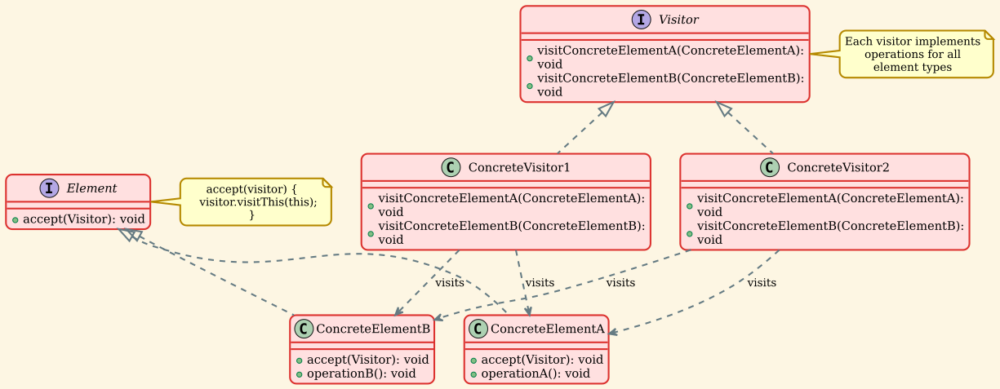
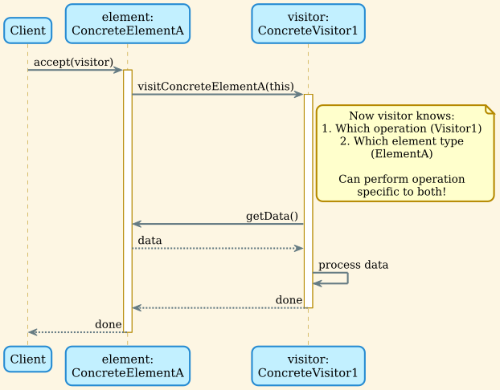
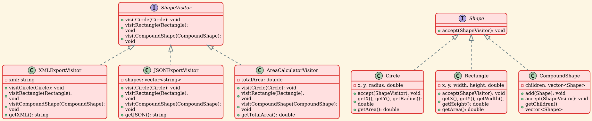
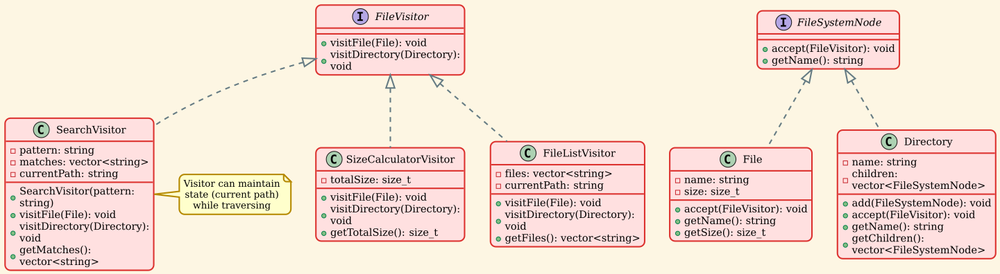
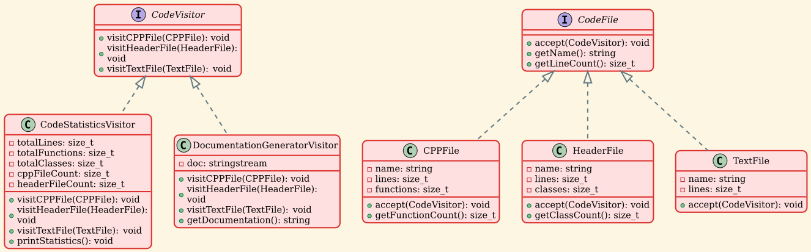
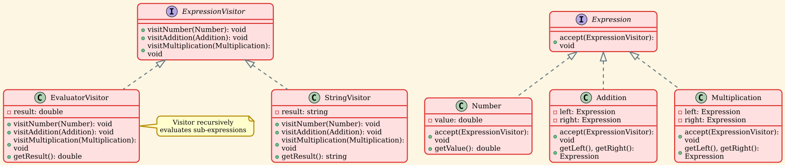
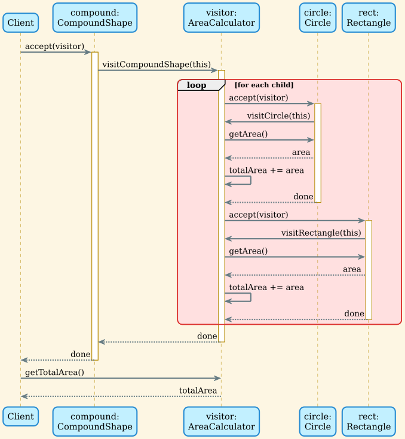

Visitor Pattern
Overview
The Visitor Pattern is a behavioral design pattern that lets you separate algorithms from the objects on which they operate. It allows you to add new operations to existing object structures without modifying those structures. This is achieved through a technique called "double dispatch."
Intent
- Represent an operation to be performed on elements of an object structure
- Define new operations without changing the classes of the elements on which it operates
- Separate algorithms from the objects they operate on
- Enable operations to work across disparate classes
Problem
When you need to perform various operations on a complex object structure (like a composite), you face several challenges:
- Adding new operations requires modifying all element classes
- Related operations are scattered across multiple classes
- Each class becomes cluttered with many operations
- Operations that work across the structure are hard to implement
- Violates Single Responsibility and Open/Closed principles
Solution
Create a separate visitor class for each operation. Elements accept visitors and call the appropriate visitor method. This uses double dispatch: the operation depends on both the visitor type and the element type.
Structure
Class Diagram

Components
-
Visitor Interface
- Declares visit operations for each concrete element type
- One visit method per element class
- Allows adding new operations without changing elements
-
Concrete Visitor
- Implements operations for each element type
- Can accumulate state while traversing structure
- Each visitor represents one algorithm/operation
-
Element Interface
- Declares accept method that takes a visitor
- Enables double dispatch mechanism
-
Concrete Element
- Implements accept by calling visitor's visit method
- Passes itself to the visitor
- May provide methods for visitor to access internal state
-
Object Structure (Optional)
- Collection of elements
- Provides interface to iterate elements
- May be a composite or simple collection
Double Dispatch Mechanism

Implementation Examples
Example 1: Shape Export System
Export shapes to different formats without modifying shape classes.

Operations:
- XML Export - Exports shape data to XML format
- JSON Export - Exports shape data to JSON format
- Area Calculation - Calculates total area of all shapes
Benefits:
- Add new export formats without modifying Shape classes
- All XML export logic is in one place (XMLExportVisitor)
- Each visitor can maintain its own state (accumulated area, output buffer)
Usage:
| // Create shapes
auto circle = std::make_shared<Circle>(10, 20, 5);
auto rect = std::make_shared<Rectangle>(0, 0, 100, 50);
std::vector<std::shared_ptr<Shape>> shapes;
shapes.push_back(circle);
shapes.push_back(rect);
// Export to XML
XMLExportVisitor xmlVisitor;
for (const auto& shape : shapes) {
shape->accept(&xmlVisitor);
}
std::cout << xmlVisitor.getXML();
// Calculate total area
AreaCalculatorVisitor areaVisitor;
for (const auto& shape : shapes) {
shape->accept(&areaVisitor);
}
std::cout << "Total area: " << areaVisitor.getTotalArea();
|
Example 2: File System Operations
Perform various operations on file system structure.

Operations:
| Operation |
Purpose |
State Maintained |
| SizeCalculator |
Calculate total size |
Total bytes |
| FileList |
List all files with paths |
Current path, file list |
| Search |
Find files matching pattern |
Pattern, matches, current path |
Usage:
| // Build file system
auto root = std::make_shared<Directory>("root");
auto src = std::make_shared<Directory>("src");
src->add(std::make_shared<File>("main.cpp", 1024));
src->add(std::make_shared<File>("utils.h", 512));
root->add(src);
// Calculate size
SizeCalculatorVisitor sizeVisitor;
root->accept(&sizeVisitor);
std::cout << "Total: " << sizeVisitor.getTotalSize() << " bytes\n";
// Search for .h files
SearchVisitor searchVisitor(".h");
root->accept(&searchVisitor);
for (const auto& match : searchVisitor.getMatches()) {
std::cout << "Found: " << match << "\n";
}
|
Example 3: Code Analysis System
Analyze code files and generate various reports.

Operations:
- Code Statistics - Count lines, functions, classes across all files
- Documentation Generator - Generate markdown documentation for each file
Different Treatments:
| // CPP files: count functions
void visitCPPFile(CPPFile* file) {
totalFunctions_ += file->getFunctionCount();
}
// Header files: count classes
void visitHeaderFile(HeaderFile* file) {
totalClasses_ += file->getClassCount();
}
// Text files: skip in code statistics
void visitTextFile(TextFile* file) {
// Not counted in code statistics
}
|
Example 4: Expression Evaluator
Evaluate mathematical expressions using visitors.

Operations:
- Evaluator - Calculates the numeric result
- String - Converts expression to string representation
Usage:
| // Build expression: (5 + 3) * 2
auto expr = std::make_shared<Multiplication>(
std::make_shared<Addition>(
std::make_shared<Number>(5),
std::make_shared<Number>(3)
),
std::make_shared<Number>(2)
);
// Evaluate
EvaluatorVisitor evaluator;
expr->accept(&evaluator);
std::cout << "Result: " << evaluator.getResult(); // 16
// Convert to string
StringVisitor stringVisitor;
expr->accept(&stringVisitor);
std::cout << "Expression: " << stringVisitor.getResult();
// Output: ((5 + 3) * 2)
|
Sequence Diagram: Visitor Traversal

Real-World Applications
1. Compilers and Interpreters
Abstract Syntax Tree (AST) Traversal:
| // Different passes as visitors
class TypeCheckVisitor : public ASTVisitor {
// Check type correctness
};
class CodeGeneratorVisitor : public ASTVisitor {
// Generate machine code
};
class OptimizerVisitor : public ASTVisitor {
// Optimize code
};
// Same AST, different operations
ast->accept(&typeChecker);
ast->accept(&optimizer);
ast->accept(&codeGenerator);
|
Benefits:
- Separate compilation passes clearly
- Each pass is independent
- Easy to add new passes (e.g., profiling, debugging info)
2. Document Object Model (DOM)
HTML/XML Processing:
| class RenderVisitor : public DOMVisitor {
// Render to screen
};
class PrintVisitor : public DOMVisitor {
// Print to paper
};
class SerializeVisitor : public DOMVisitor {
// Serialize to file
};
class ValidationVisitor : public DOMVisitor {
// Validate structure
};
|
Applications:
- Web browsers (rendering, printing, DOM inspection)
- XML parsers and validators
- Document converters
3. Game Development
Scene Graph Traversal:
| class RenderVisitor : public SceneVisitor {
void visitMeshNode(MeshNode* node) {
renderMesh(node->getMesh());
}
void visitLightNode(LightNode* node) {
setupLight(node->getLight());
}
};
class CollisionVisitor : public SceneVisitor {
void visitMeshNode(MeshNode* node) {
checkCollisions(node->getBounds());
}
};
class CullingVisitor : public SceneVisitor {
void visitNode(Node* node) {
if (!isVisible(node)) {
node->setCulled(true);
}
}
};
|
Game Engine Operations:
- Rendering pass
- Physics/collision detection
- Frustum culling
- Shadow map generation
- Animation updates
4. Static Code Analysis
Code Quality Tools:
| class ComplexityAnalyzer : public CodeVisitor {
// Calculate cyclomatic complexity
};
class DuplicationDetector : public CodeVisitor {
// Find duplicated code
};
class SecurityScanner : public CodeVisitor {
// Detect security issues
};
class MetricsCollector : public CodeVisitor {
// Collect code metrics
};
|
Tools Using Visitor:
- Lint tools (ESLint, Pylint, clang-tidy)
- Code coverage analyzers
- Refactoring tools
- Documentation generators (Doxygen, Javadoc)
5. Tax/Financial Calculations
Processing Different Income Types:
| class TaxCalculator : public IncomeVisitor {
void visitSalary(Salary* income) {
tax += income->getAmount() * 0.25;
}
void visitDividends(Dividends* income) {
tax += income->getAmount() * 0.15;
}
void visitCapitalGains(CapitalGains* income) {
if (income->isLongTerm()) {
tax += income->getAmount() * 0.15;
} else {
tax += income->getAmount() * 0.25;
}
}
};
|
6. CAD/Graphics Applications
Operations on Geometric Objects:
| class AreaCalculator : public ShapeVisitor { /*...*/ };
class PerimeterCalculator : public ShapeVisitor { /*...*/ };
class BoundingBoxCalculator : public ShapeVisitor { /*...*/ };
class IntersectionDetector : public ShapeVisitor { /*...*/ };
class SVGExporter : public ShapeVisitor { /*...*/ };
class DXFExporter : public ShapeVisitor { /*...*/ };
|
7. Network Protocol Processing
Handle Different Message Types:
| class LoggingVisitor : public MessageVisitor {
// Log all messages
};
class ValidationVisitor : public MessageVisitor {
// Validate message format
};
class RoutingVisitor : public MessageVisitor {
// Route to appropriate handler
};
class SerializationVisitor : public MessageVisitor {
// Serialize for transmission
};
|
8. Insurance/Policy Systems
Process Different Policy Types:
| class PremiumCalculator : public PolicyVisitor {
void visitLifeInsurance(LifeInsurance* policy) {
// Calculate based on age, health
}
void visitAutoInsurance(AutoInsurance* policy) {
// Calculate based on car, driving record
}
void visitHomeInsurance(HomeInsurance* policy) {
// Calculate based on location, value
}
};
|
Design Considerations
Advantages
✅ Open/Closed Principle: Add new operations without modifying element classes.
| // Easy to add new visitor
class NewOperationVisitor : public Visitor {
// Implement new operation for all element types
};
|
✅ Single Responsibility Principle: Related operations grouped in visitor classes.
| // All XML export logic in one place
class XMLExportVisitor {
void visitCircle(Circle* c) { /* XML for circle */ }
void visitRect(Rectangle* r) { /* XML for rect */ }
};
|
✅ Accumulate State: Visitors can maintain state during traversal.
| class StatisticsVisitor : public FileVisitor {
size_t totalSize; // Accumulated
size_t fileCount; // Accumulated
size_t maxSize; // Tracked
};
|
✅ Work Across Class Hierarchies: Visit objects of different, unrelated types.
| // Can visit both shapes and UI elements
class UnifiedRenderer : public Visitor {
void visitCircle(Circle* c) { /*...*/ }
void visitButton(Button* b) { /*...*/ }
};
|
Disadvantages
❌ Hard to Add New Element Types: Must update all visitors.
| // Adding Triangle requires modifying:
// - Visitor interface (add visitTriangle)
// - All concrete visitors (implement visitTriangle)
// - 10 visitors = 10 changes!
|
❌ Breaks Encapsulation: Visitors need access to element internals.
| // Visitor needs getters for private data
class Circle {
private:
double x_, y_, radius_; // Private
public:
// Must expose for visitors
double getX() const { return x_; }
double getY() const { return y_; }
double getRadius() const { return radius_; }
};
|
❌ Circular Dependencies: Elements know visitors, visitors know elements.
| // Element.h includes Visitor.h
// Visitor.h includes Element.h
// Need forward declarations and careful design
|
❌ Double Dispatch Complexity: Can be hard to understand for beginners.
| // Two dynamic dispatches:
element->accept(visitor); // 1st dispatch: which element?
visitor->visitElement(this); // 2nd dispatch: which visitor?
|
When to Use Visitor
✅ Use Visitor when:
- Object structure is stable but operations change frequently
- Many distinct and unrelated operations need to be performed
- Want to keep related operations together
- Need to accumulate information while traversing structure
- Operations span across different class hierarchies
Good Scenarios:
| // Stable structure (AST nodes rarely change)
// Frequent new operations (optimization passes)
ast->accept(&typeChecker);
ast->accept(&optimizer);
ast->accept(&codeGenerator);
ast->accept(&debugInfoGenerator); // Easy to add!
|
❌ Avoid Visitor when:
- Object structure changes frequently (adding new element types)
- Operations are simple and don't justify the complexity
- Breaking encapsulation is problematic
- Only have one or two operations
- Prefer composition over complex class hierarchies
Better Alternatives:
| // Simple operation - don't need visitor
shapes.forEach(shape -> shape.draw());
// Few operations - just add methods to class
class Shape {
virtual void draw() = 0;
virtual double getArea() = 0;
};
|
Visitor vs Other Patterns
| Aspect |
Visitor |
Iterator |
Strategy |
| Purpose |
Operations on structure |
Traverse structure |
Algorithm selection |
| Focus |
What to do |
How to traverse |
How to do it |
| State |
Can accumulate |
Usually stateless |
Algorithm-specific |
| Polymorphism |
Double dispatch |
Single dispatch |
Single dispatch |
| Adding operations |
Easy |
N/A |
Easy |
| Adding elements |
Hard |
Unaffected |
Unaffected |
Comparison with Iterator:
| // Iterator: HOW to traverse
for (auto it = begin(); it != end(); ++it) {
process(*it);
}
// Visitor: WHAT to do with each element
structure.accept(visitor); // Visitor performs operations
|
Comparison with Strategy:
| // Strategy: encapsulates algorithm
context.setStrategy(new ConcreteStrategy());
context.execute();
// Visitor: operations on object structure
element.accept(new ConcreteVisitor());
|
Best Practices
1. Use Forward Declarations to Avoid Circular Dependencies
| // Visitor.h
class ConcreteElementA; // Forward declaration
class ConcreteElementB;
class Visitor {
public:
virtual void visitConcreteElementA(ConcreteElementA* element) = 0;
virtual void visitConcreteElementB(ConcreteElementB* element) = 0;
};
// Element.h
#include "Visitor.h"
class Element {
public:
virtual void accept(Visitor* visitor) = 0;
};
|
2. Make Accept Method Final
| class ConcreteElement : public Element {
public:
// Cannot be overridden - prevents mistakes
void accept(Visitor* visitor) final override {
visitor->visitConcreteElement(this);
}
};
|
3. Consider Using Acyclic Visitor for Stability
| // Allows adding new element types without modifying all visitors
template<typename T>
class Visitor {
public:
virtual void visit(T* element) = 0;
};
class Element {
public:
template<typename V>
void accept(V& visitor) {
visitor.visit(this);
}
};
|
4. Provide Default Implementations for Optional Visits
| class BaseVisitor : public Visitor {
public:
// Default no-op implementations
virtual void visitElementA(ElementA* /* element */) override {}
virtual void visitElementB(ElementB* /* element */) override {}
virtual void visitElementC(ElementC* /* element */) override {}
};
// Concrete visitor only overrides what it needs
class SpecificVisitor : public BaseVisitor {
public:
void visitElementA(ElementA* element) override {
// Only handle ElementA
}
};
|
5. Consider Visitor Return Values
| // Visitor can return values
class ExpressionVisitor {
public:
virtual double visitNumber(Number* n) = 0;
virtual double visitAddition(Addition* a) = 0;
};
class EvaluatorVisitor : public ExpressionVisitor {
public:
double visitAddition(Addition* a) override {
double left = a->getLeft()->accept(this);
double right = a->getRight()->accept(this);
return left + right;
}
};
|
6. Use Const Correctness
| class Visitor {
public:
virtual void visitElement(const Element* element) = 0;
};
class Element {
public:
virtual void accept(Visitor* visitor) const = 0;
};
class ConcreteElement : public Element {
public:
void accept(Visitor* visitor) const override {
visitor->visitElement(this);
}
};
|
7. Document Which Operations are Expensive
| class ExpensiveVisitor : public Visitor {
/**
* @warning This operation is O(n²) and allocates memory
*/
void visitLargeStructure(LargeStructure* structure) override {
// Expensive operation
}
};
|
- Composite: Visitor is often used to apply operations across Composite structures
- Iterator: Iterator can be used to traverse elements, while Visitor performs operations
- Interpreter: AST nodes in Interpreter pattern can use Visitor for different interpretations
- Strategy: Both encapsulate algorithms, but Visitor works on object structure
Summary
The Visitor Pattern provides a powerful way to:
- Separate operations from object structures
- Add new operations without modifying existing classes
- Work across class hierarchies with different element types
- Accumulate state during structure traversal
Key Points:
- Double Dispatch - Operation depends on both visitor and element type
- Open/Closed - Easy to add operations, hard to add element types
- State Accumulation - Visitors can maintain state during traversal
- Trade-offs - Flexibility for operations vs. rigidity for structure
When to Use:
- Stable object structure with evolving operations
- Compilers and interpreters (AST traversal)
- Document processing (rendering, exporting)
- File systems (searching, calculating sizes)
- Graphics applications (rendering, exporting, calculating)
- Code analysis tools (metrics, validation)
When to Avoid:
- Object structure changes frequently
- Operations are simple
- Breaking encapsulation is problematic
- Only one or two operations needed
The Visitor Pattern excels when you have a stable object structure but need to perform many different operations on it. It's widely used in compilers, document processors, and analysis tools where the same structure needs to be processed in various ways. However, be mindful of its trade-offs: while adding new operations is easy, adding new element types requires updating all visitors.